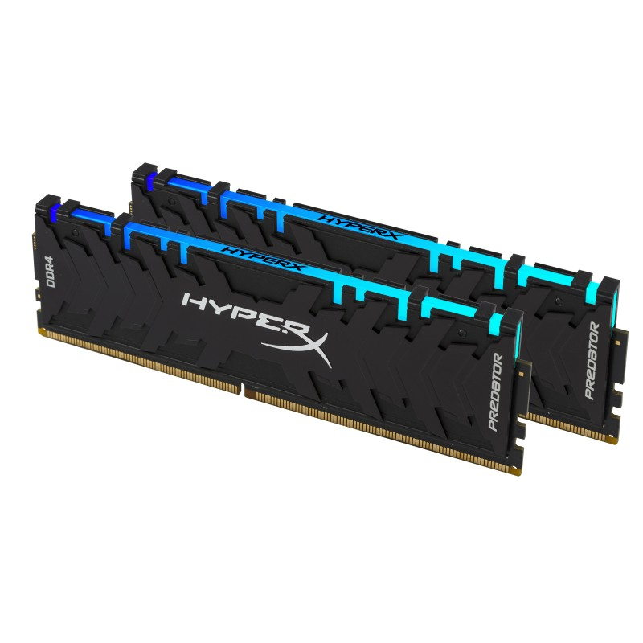

RAM
Operační paměť počítače, běžně označovaná zkratkou RAM (Random Access Memory). Jedná se o typ paměti, která umožňuje náhodný přístup. Umožňuje číst nebo zapisovat data do libovolného místa paměti, díky čemuž je extrémně rychlá. Všechna data se však ztrácí s vypnutím počítače. Proto slouží jako dočasné úložiště pro práci počítače, notebooky, ale i mobilní telefony a tablety.
Velikost
Velikost RAM se udává v gigabajtech (GB). Pro hladký chod systému v noteboocích a stolních počítačích je naprosté minimum 4-8 GB, standardem je v současnosti 16 GB. Pro náročnější práci v grafických programech doporučujeme i velikost operační paměti 32 GB a více.
Typ
V současnosti se ve všech noteboocích používají operační paměti typu DDR. Tato zkratka představuje dvojnásobnou rychlost přenostu dat (Double Data Rate). Používá se verze DDR3 a nejnovější DDR4. DDR3 – nástupce staršího typu DDR2 uvedený v roce 2007. Oproti předchůdci dosahuje vyšších frekvencí při sníženém napětí, což se u notebooků projevilo prodlouženou výdrží na baterii. Obvyklá pracovní frekvence je 1 333 MHz, 1 600 MHz a 1 866 MHz, ale existují i rychlejší moduly. DDR4 – jedná se o přímého nástupce DDR3. První moduly DDR4 byly na trhu dostupné v roce 2014. Opět došlo ke snížení pracovního napětí a zvýšení frekvence. Běžné moduly standardně pracují na frekvenci přesahující 2 GHz, ty nejvýkonnější až na 4 266 MHz. DDR5 - Pátá generace operační paměti, která je evolučním vývojem předchozích generací DDR SDRAM. Standard DDR5, původně určený pro rok 2018, byl zveřejněn 14. července 2020.
Frekvence
S rostoucí frekvencí se zvyšuje rychlost přenosu dat. Na celkovém výkonu se ovšem frekvence operační paměti příliš neprojeví. Výjimku představuje výkon integrované grafické karty, kdy frekvence operační paměti poměrně výrazně ovlivňuje grafický výkon notebooku.
